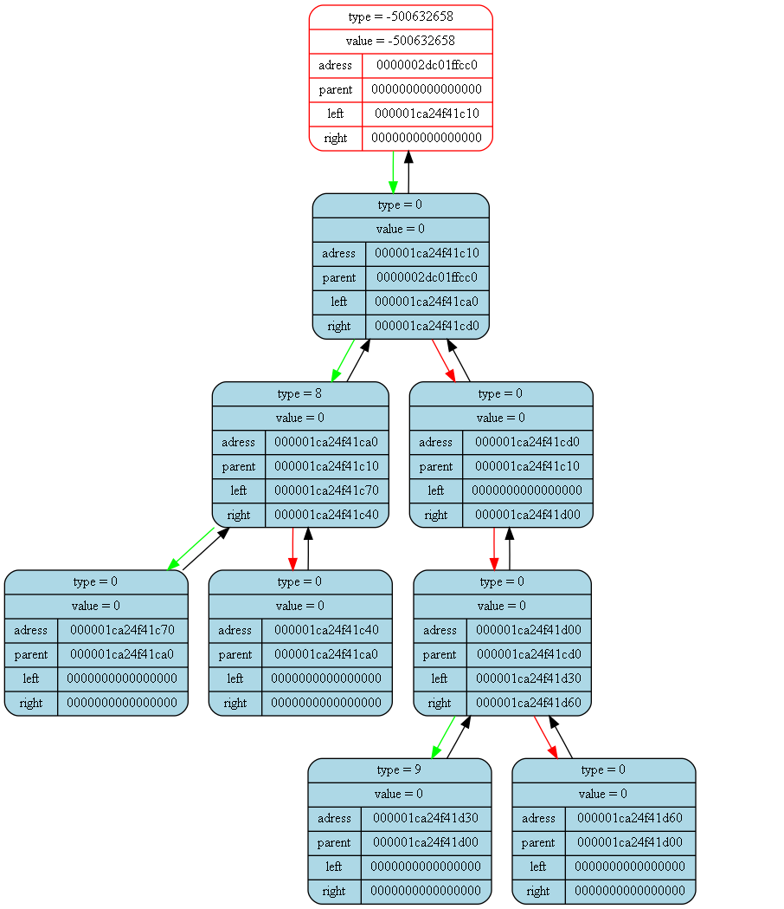

<pre>
<pre>

Tree dump from (int main()) at (frontmain.cpp) at line (17):
tree [0000002dc01ffc90] "&(prog -> tree)" at (int ProgCtor(Prog_t*)) at (front.cpp)(31):
{
	status   = 1
	error    = 0
	size     = 8

	((((TYPE = 0; VAL = 0)TYPE = 8; VAL = 0(TYPE = 0; VAL = 0))TYPE = 0; VAL = 0(TYPE = 0; VAL = 0((TYPE = 9; VAL = 0)TYPE = 0; VAL = 0(TYPE = 0; VAL = 0))))TYPE = -500632658; VAL = -500632658)
}
